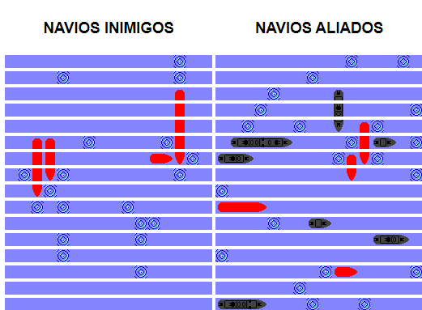
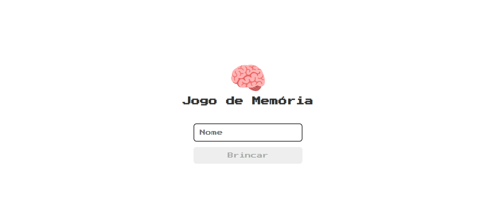

Início
Jogos
Sobre mim
O site com
os melhores jogos antigos e novos que você já jogou
Jogos
MENJA
Menja é um jogo que nele voce tem que cortar quadrados com a seta ou dedo, sem deixar cair nenhum bloco não cortado.
ECLIPSE
Color blast e um jogo,que nele voce e uma barra vermelha. O objetivo do jogo e atirar nas outras barras e nao deixar que elas atirem em voce, e tambem chegar no maior numero de pontos que la vai estar escrito score.
BOLINHA AMARELA
Bolinha amarela e um jogo novo tambem.
O objetivo e pular os muros e chegar no numero mais grandes de muros pulados, voce tem 6 vidas e 4 pulos de cada vez.
atari breakout
Breakout é um jogo eletrônico para arcade desenvolvido pela Atari, Inc e lançado em 13 de maio de 1976. Foi idealizado por Nolan Bushnell e Steve Bristow e influenciado pelo jogo de arcade de 1972 Pong, também da Atari. O jogo foi convertido para os consoles e atualizado como Super Breakout.
SPACE SHOOTER
A primeira ideia do jogo, segundo o designer japonês, veio a partir de um sonho que teve sobre invasão de alienígenas, Toshihiro criou Space Invaders, em que uma bateria antiaérea controlada pelo jogador na base da tela atirava em alienígenas que se aproximavam da Terra.
TETRIS
O jogo Tetris nasceu na antiga Russia, em junho de 1984, e foi desenvolvido pelo cientista russo Alexey Pajitnov no Centro de Computação da Academia Russa de Ciências (Russian Academy of Sciences). Em plena Guerra Fria, Pajitnov se inspirou em um jogo de tabuleiro de origem grega, chamado Pentominoes, para criar o game.
PING PONG
Pong e um game de esporte desenvolvido e publicado pela Atari em 1972. Com uma proposta simples que lembra a dinamica do pingue pongue, o titulo marcou a historia dos videogames por ser o primeiro jogo lucrativo da historia. Conheça Pong, um dos classicos mais significantes da industria de jogos.
Idealizado por Allan Alcorn e lançado para rodar inicialmente apenas em maquinas arcade, Pong tornou se o primeiro jogo comercialmente bem sucedido. Na decada de 1970, a Atari mostrou que jogo de videogame era capaz de gerar receitas significativas para empresas de entretenimento.
SNAKE
O objetivo do jogo e atingir uma cobra de maior dimensao possivel. O jogo chega ao fim quando a cabeça da cobra encostar em qualquer parte de seu corpo ou se o jogador decidir encerra lo.
O conceito do jogo da cobrinha ja existia bem antes da era dos celulares. Ele apareceu pela primeira vez em 1975 no jogo para arcades Blockade, desenvolvido pela Gremlin Industries. Diferente do game da Nokia, Blockade foi feito para dois jogadores
FLAPPY BIRD
Flappy bird e um jogo que tem um passarinho e o objetivo do jogo e voce desviar dos canos e chegar no numero mais alto
TRAFFIC RACER
Traffic racer é um jogo de corrida. Nele tem alguns carros que você tem que desviar porque senão você perde. Foi criado por volta de 1990.
BATALHA NAVAL

Em 1967, enquanto ocorria a enervante Guerra Fria, a primeira versão de tabuleiro do Batalha Naval foi finalmente criada pela empresa norte-americana Milton Bradley Company. Tratava-se da clássica versão do jogo, com as maletinhas e navios de plástico encaixáveis, lançada no Brasil em 1988.
START REATOR
START REATOR e um jogo novo que tem no among us.
JOGO DA FORCA
A cada letra errada, é desenhado uma parte do corpo do enforcado. O jogo termina ou com o acerto da palavra ou com o término do preenchimento das partes corpóreas do enforcado. Para começar o jogo se desenha uma base e um risco correspondente ao lugar de cada letra.
JOGO DA MEMORIA

SINUCA
XADREZ
TOWER DEFENSER
SUDOKU
PAC MAN
.png)